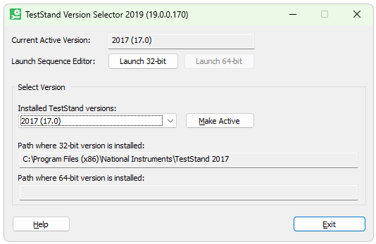
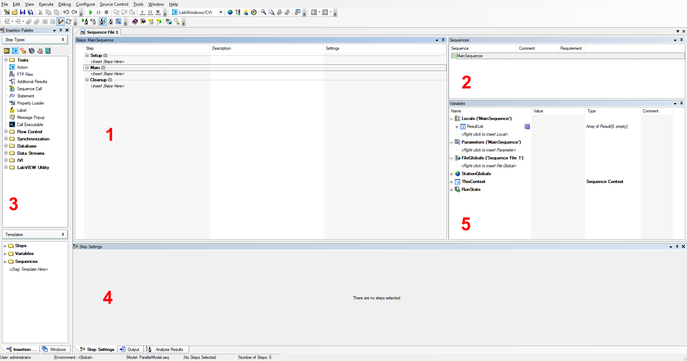

Open TestStand
- Press the Windows key and search for "TestStand Version Selector". Open the application.
- Under "Installed TestStand versions", there will be a dropdown listing the currently installed versions. If TestStand 2017 is not yet installed, talk to IT. Otherwise, select 2017.
- Select "Make Active", and then select "Launch 32-bit".
- When TestStand launches, it will prompt you for credentials. By default, the username should be "administrator" and the password should be left blank.

TestStand Version Selector
Familiarize Yourself
Once TestStand is open, select View > Reset UI Configuration. This will ensure that your UI layout is the same as described in this guide. However, the TestStand UI is completely customizable and can be adjusted to your liking.
Take a few moments to familiarize yourself with the general layout of the program.

Default TestStand Layout
The interface is divided into the following panes:
- Steps Pane: this is where test steps are sequenced.
- Sequences Pane: contains a list of all sequences within the sequence file.
- Insertion Palette: contains steps that can be dragged into the steps pane.
- Step Settings Pane: when a test step is selected, this pane can be used to view and edit step settings.
- Variables Pane: all variables are listed here.
 1.16.1
1.16.1